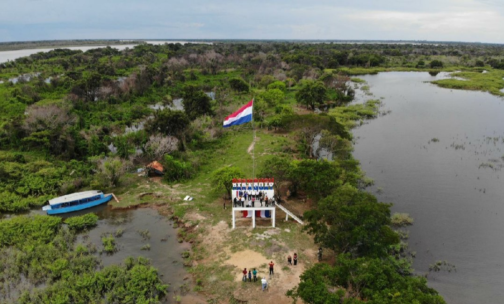
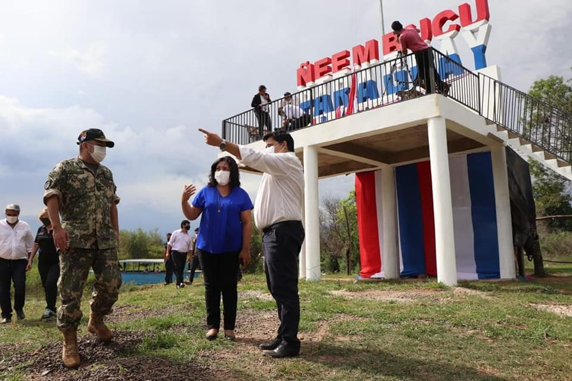
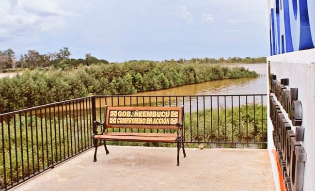
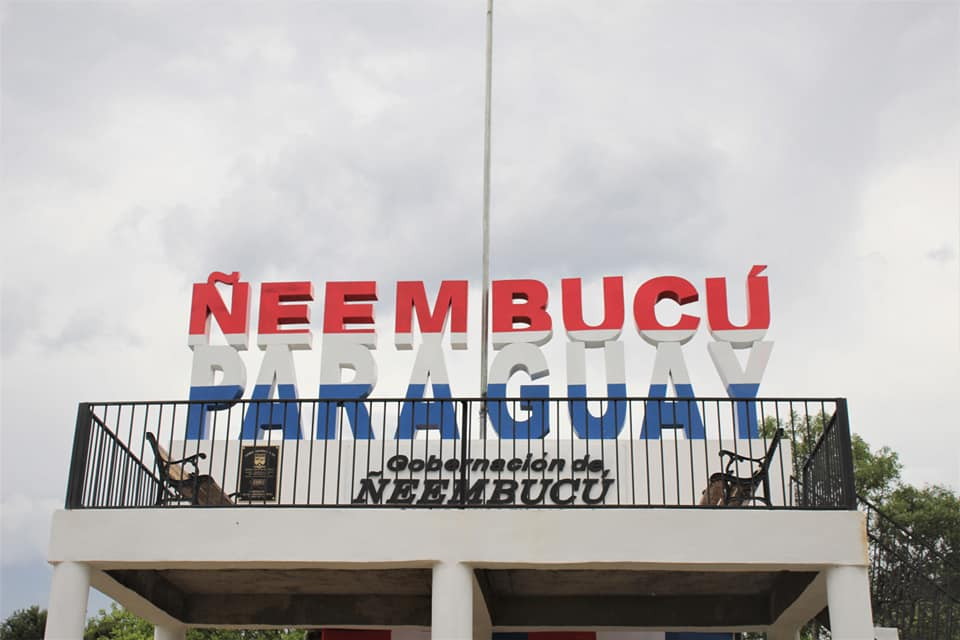

Hito de referencia con el izamiento de la bandera paraguaya en el vértice sur de nuestra geografía nacional, donde se inicia la República del Paraguay, a 380 km de Asunción. Desde el mirador se puede ver la unión de los ríos Paraguay y Paraná y distinguir por los colores: el Paraguay es marrón, por sedimentos que arrastra en todo su curso. Enfrente, pasando el río Paraguay, está la isla del Cerrito (Argentina); cruzando el Paraná está la isla del Cerrito (Argentina); cruzando el Paraná está Paso de la Patria (Argentina). Abierto para todo público curioso por ver y conocer a detalle un poco más de nuestro bello Paraguay.
Cuenta con unos recursos hídricos importantes y connfluencia de los rios Paraguya y Paraná; son los lugares más apetecibles para los pescadores deportivos locales o extranjeros. En la zona pueden contar con alojamiento en hoteles y hospedajes que cuentan con servicios de pesca para sus visitanes.
   